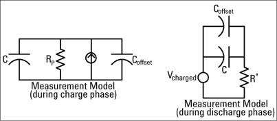
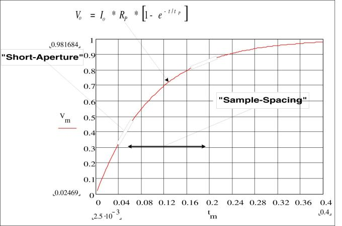

The multimeter makes capacitance measurements by applying a known current to charge the capacitance and then a resistance to discharge as shown below:

An illustration of the response curve while charging is shown below:

Capacitance is calculated by measuring the change in voltage (DV) that occurs over a “short aperture” time, (Dt). This measurement is repeated at two different times during the exponential rise that occurs. An algorithm takes the data from these four points, and by linearizing that exponential rise over these “short apertures”, accurately calculates the capacitance value.
The measurement cycle consists of two parts: a charge phase (shown in the graph) and a discharge phase. The time–constant during the discharge phase is longer, due to a 100 kΩ protective resistor in the measurement path. This time–constant plays an important role in the resultant reading rate (measurement time). The incremental times (or “sample times”) as well as the width of the “short apertures”, vary by range, in order to minimize noise and increase reading accuracy.
For the best accuracy, take a zero null measurement with open probes, to null out the test lead capacitance, before connecting the probes across the capacitor to be measured (see Capacitance Measurements for details).
Capacitors that have a high dissipation factor or other non-ideal characteristics will affect capacitance measurements. Capacitors with high dissipation factors may exhibit a variance between the measured value using the multimeter versus the single frequency method of some other LCR meters. The single frequency method will also see more variation at different frequencies. For example, some inexpensive capacitance substitution boxes, when measured with the multimeter, are almost 5% different compared to the same capacitance measured with the single frequency method of an LCR meter. The LCR meter will also show different values at different frequencies.
Capacitors with long time constants (dielectric absorption) will result in slow measurement settling time, and will take a number of seconds to stabilize. You may see this when first connecting a capacitor or when the delay time to make a measurement is varied. A high quality film capacitor typically shows the least of this and an electrolytic capacitor the most, with ceramic capacitors typically in between.